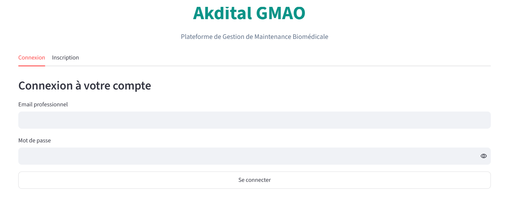
↗Akdital CMMS / GMAO
Plateforme web de gestion de maintenance assistée par ordinateur pour le suivi des équipements médicaux et des ordres de travail hospitaliers.
Concevoir des solutions numériques innovantes et appliquer l’intelligence artificielle pour transformer le secteur de la santé. Étudiante ingénieure passionnée par la santé numérique et le développement logiciel.
Télécharger mon CV
Profil orienté transformation digitale, en cycle ingénieur à SUPTECH SANTÉ (spécialité Génie Digital & Intelligence Artificielle pour la Santé), je combine des compétences techniques avancées en développement logiciel avec une solide compréhension des systèmes biomédicaux. Mon objectif : élaborer des outils intelligents et efficaces (systèmes GMAO hospitaliers, applications de traitement du signal ECG) pour améliorer le parcours de soins.
SUPTECH SANTÉ, Mohammedia
Future ingénieure (2ᵉ année)
Septembre 2025 – Présent
SUPTECH SANTÉ, Mohammedia
2 ans
Septembre 2023 – Juillet 2025
Apex Digital – UIB, Casablanca
Depuis octobre 2026 · temps partiel, hybride
Membre active de la Cellule Tech & Innovation : conception et développement de projets digitaux et de solutions technologiques innovantes.
AKDITAL (Hôpital Privé de Mohammedia)
Mai – Juillet 2026
Conception et développement d’une application web de GMAO pour l’optimisation du parc d’équipements médicaux (HTML, CSS, JavaScript, PHP, Python/Django, MySQL).
Association des Amis de Hay Hassani Attesteque
Marathon International de Casablanca, 13ᵉ édition
Conception de plateformes web sur mesure (Django, React, FastAPI) adaptées aux besoins des établissements de santé et de la maintenance biomédicale (GMAO/CMMS).
Développement d’algorithmes et de modèles pour le traitement de signaux biomédicaux (ex. ECG) et la prédiction d’alertes de santé.
Conception, optimisation et structuration de bases de données relationnelles (MySQL, MERISE) pour des systèmes complexes.
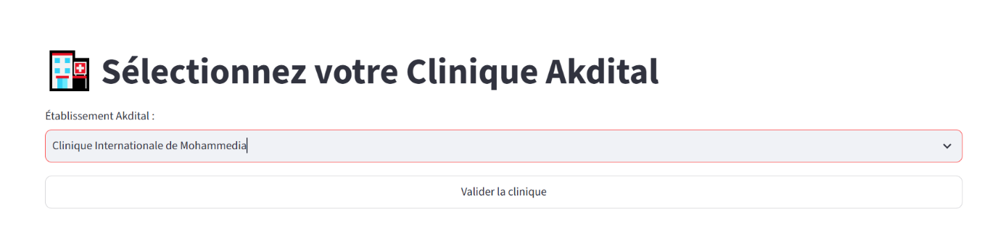
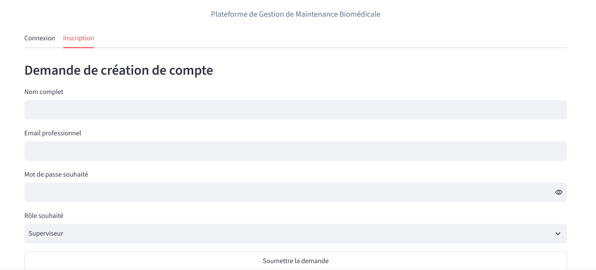
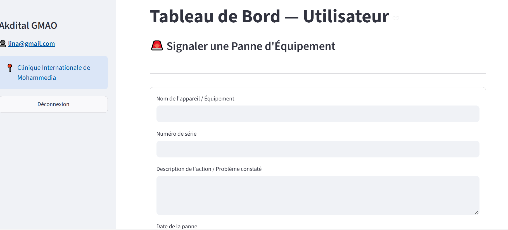
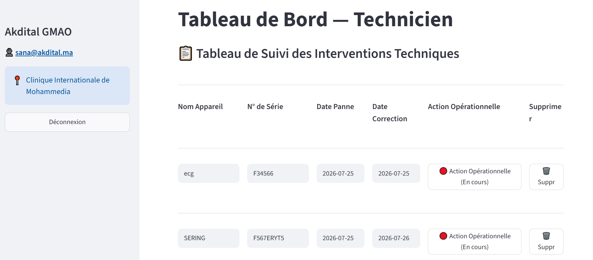
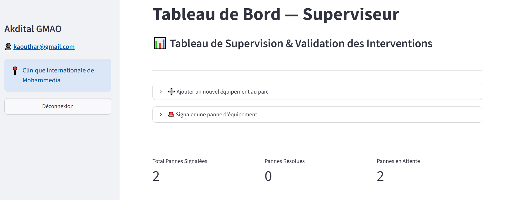
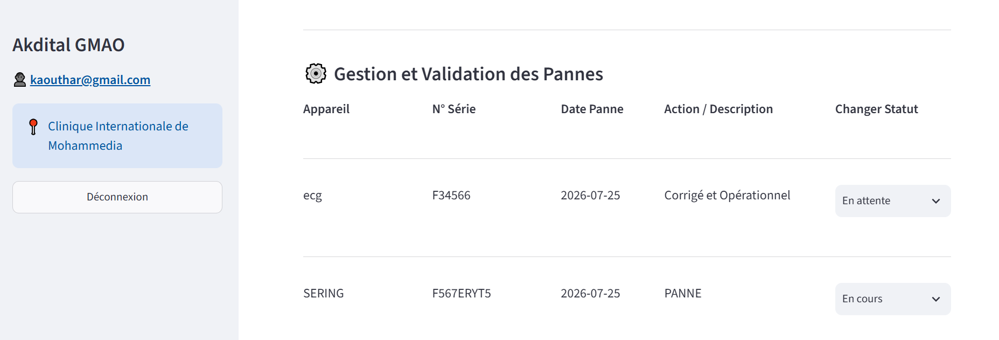
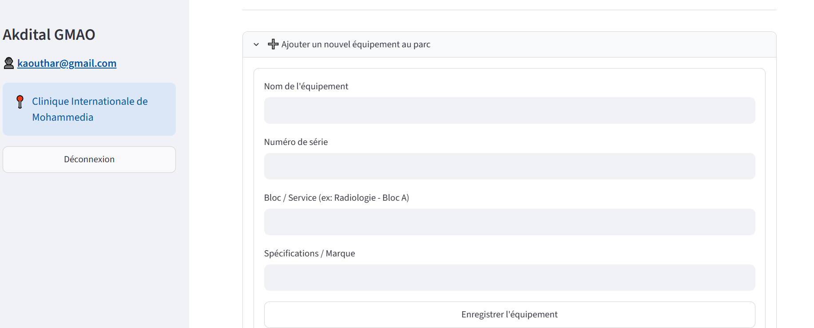
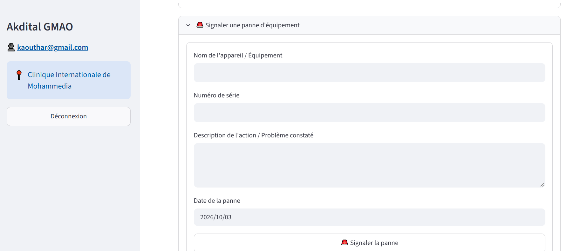
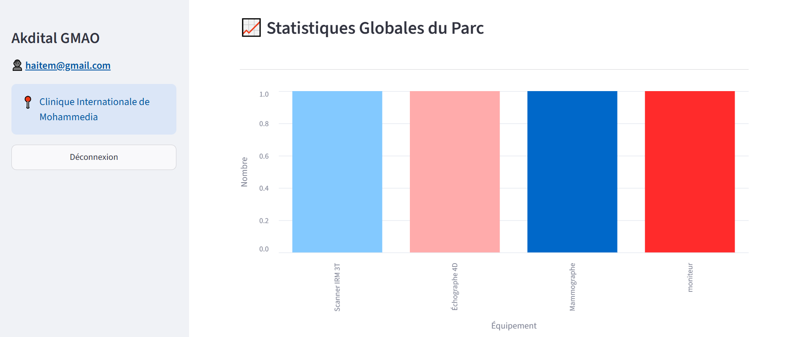
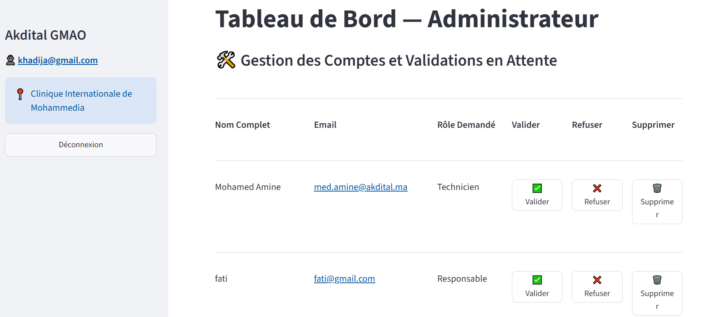
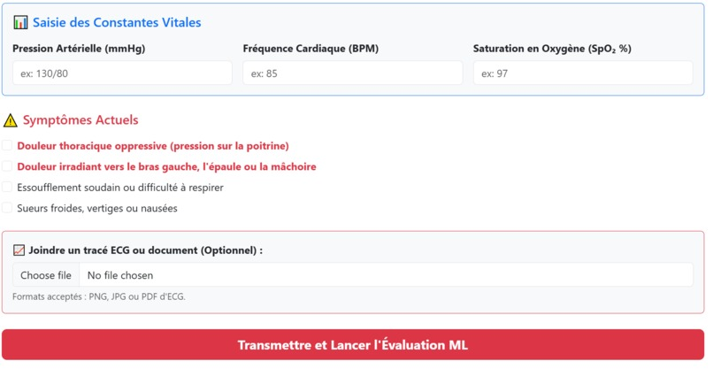
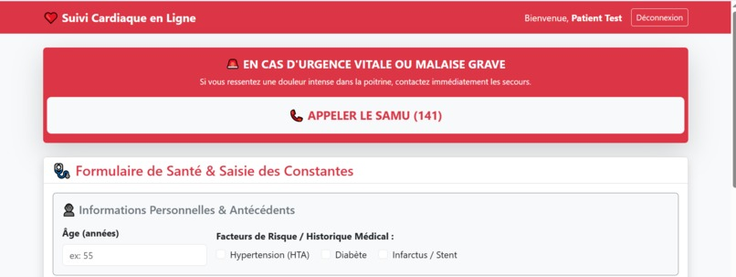
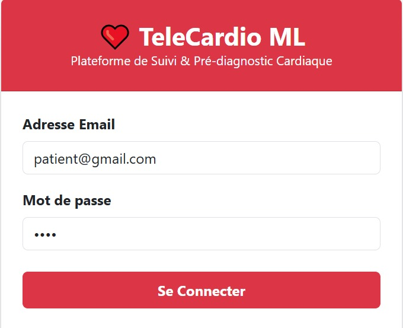
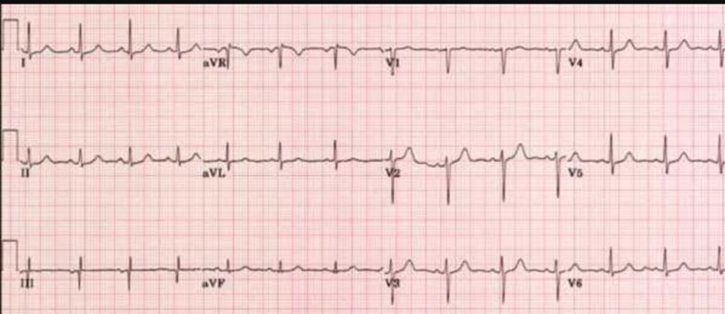
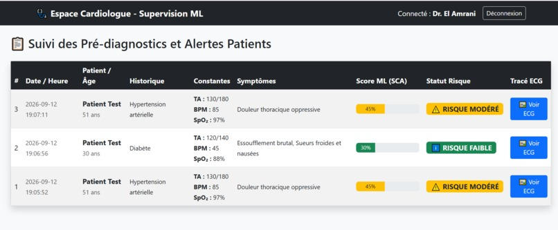
Microsoft
Bien démarrer avec Microsoft Foundry (IA-900)
Avril 2026
Microsoft
Active Directory Domain Services
Avril 2026
kaoutharelazzab92@gmail.com · 0766 324 650 · Maroc